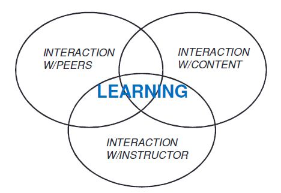

Online Pedagogy: Online Interaction
Online Interaction
Developing opportunities
for online interaction is essential for a successful online course.
Students are greatly dependent on the facilitation of offering
opportunities for interaction. Moore (1989) identified three types of
interactions that are important for learning and engagement, including
learner-content, learner-instructor, and learner-learner. Learn more
about how to ensure your online and hybrid courses are highly
interactive learning environments.

Moore (1989)
Learner-content interaction is
the communication process between the learner and the content or
subject of study. Learners typically construct meaning and
understanding through the learning content and this is also a defining
characteristic of education.
There are several ways to facilitate learner-content interaction:
- Stimulate prior knowledge and "hook" your students into engaging with new concepts.
- Present subject matter by using appropriate media. You can use charts, graphs, process maps, and timelines into your course to make complicated ideas visual. These additions can serve as advance organizers to help students understand what they will learn in a unit. You may consider recording a podcast of some of the content that may normally be delivered in print or PowerPoint. Vary the way you deliver content using a variety of methods that support students diverse learning styles.
- Add interactive elements to encourage active learning. These can be as simple as rollovers (i.e., when the mouse rolls over text or an image on the screen, additional information pops up) or hyperlinks to additional information help to keep the visual design simple yet engaging. Offer exercises and activities for students to engage with course content. This is helpful for students to self-check their understanding of concepts through ungraded tools. Activities can provide feedback and reinforcement for students on specific concepts. Using pre and post exercises can help students gauge their own understanding and comfort with new content.
- An online discussion forum is a place where students share resources, negotiate meanings, and construct knowledge collaboratively. As the center of interaction and learning, online discussion is regarded as the core of an online course. Therefore, it is important to appropriately design online discussion activities and foster productive online discussions.
- In online courses, group work provides opportunities for students to interact with each other as well as with the course content. Students can ask questions, explore ideas, and solve problems together by working in groups. There are many different types of small group activities.
Learner-instructor interaction is the interaction between the learner and the expert who prepared the subject material. The instructor serves as a facilitator, guiding students through independent or group learning activities and provides feedback directly to students. Student-to-faculty interaction is extremely important in order to keep students focused on the content and provide feedback -both positive and corrective. This type of interaction should be built into all online courses.
How to Facilitate Learner-Instructor Interactions
- Feedback and Reinforcement: Feedback and reinforcement can take on many forms; email communication, audio recorded comments on assignments, or comments on blogs, journals, and class projects.
- Office Hours and Meetings: Meetings can be arranged during office hour blocks or via private meeting times using Blackboard IM, Skype, and many others. Consider that some students may not be able to meet during conventional business hours.
- Messages and
Announcements: You may want to send regular messages out to all
students, selected groups or individual students to provide additional
information, feedback or recommendations. This is helpful in keeping
your course dynamic and for students to sense the instructor's presence
between meetings or activities.
Learner-learner interaction
is where students take information that they have read or listened to
and begin to build their understanding through dialogue with others. It
could be the interaction between one learner and other learners, alone
or in group settings, with or without the real-time presence of an
instructor. It is through using information that it becomes knowledge.
How to Create Learner-to-Learner Interaction
- Partner or small group assignments that support collaborative critical thinking and problem solving
- Peer review activities that guide students to interact with each other's work
- Open forums for students to share ideas with each other such as wikis, blogs, Discussion Boards, Cyber Cafe, etc.